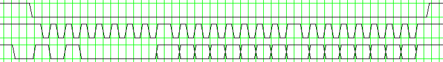
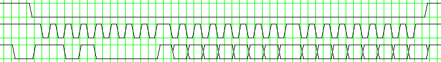

| Indeks | English version |
UZUPE£NIENIE: Podane informacje by³y dotychczas uzyskane za pomoc± "in¿ynierii wstecznej", mog± siê zatem ró¿niæ od tre¶ci oryginalnej dokumentacji opublikowanej w dniu 22-12-2011.
Modu³ jest przeznaczony do wspó³pracy z przeno¶nym mikrokomputerem Elektronika MK-90 jako wymienny no¶nik pamiêci do zapisywania programów. Wymiana danych odbywa siê przez magistralê szeregow± z prêdko¶ci± ok. 100kbit/s. Modu³ zawiera tylko 10kB pamiêci RAM, ale znajduj±cy siê w nim uk³ad sterownika potrafi adresowaæ do 64kB.
Modu³ zawiera 5 uk³adów scalonych pamiêci statycznej RAM typu KA537RU10 podtrzymywanych bateri± litow± oraz uk³ad sterownika KA1835WG2.
| Koñcówka | Symbol | Funkcja |
|---|---|---|
| 1 | BATT. | wyprowadzenie plusa wewnêtrznej baterii litowej 3V |
| 2 | VCC | napiêcie zasilaj±ce +5V |
| 3 | CLOCK | wej¶cie impulsów zegarowych |
| 4 | DATA | wej¶cie/wyj¶cie danych szeregowych |
| 5 | SELECT | wej¶cie wyboru uk³adu |
| 6 | GND | masa |
Dane zapisywane do pamiêci s± taktowane narastaj±cym zboczem impulsu CLOCK a pobierane przez modu³ przy opadaj±cym zboczu.
Najpierw jest przesy³any bit najbardziej znacz±cy.
Pierwszym przesy³anym bajtem po zmianie stanu wej¶cia SELECT z wysokiego na niski jest kod instrukcji.
Po kodzie instrukcji nastêpuje 16-bitowy adres lub dane.
Poni¿szy wykres przedstawia przyk³adow± instrukcjê Write Address (sygna³y SELECT, CLOCK, DATA).

Dane odczytywane z pamiêci s± taktowane opadaj±cym zboczem impulsu CLOCK a pobierane przez mikrokomputer przy narastaj±cym zboczu.
Poni¿szy wykres przedstawia przyk³adow± instrukcjê Read Data.

| Kod instrukcji |
Nazwa instrukcji | Funkcja |
|---|---|---|
| 0x00 | Read Status | |
| 0x10 | Read Postdecrement | Odczyt dowolnej ilo¶ci bajtów z pamiêci modu³u pocz±wszy od lokacji wskazywanej przez rejestr adresu. Rejestr adresu jest automatycznie zmniejszany po ka¿dym odebranym bajcie. Instrukcja nie u¿ywana przez mikrokomputer MK-90. |
| 0x20 | Erase Postdecrement | Zapis dowolnej ilo¶ci bajtów do pamiêci modu³u pocz±wszy od lokacji wskazywanej przez rejestr adresu. Do rejestru adresu musi byæ wstêpnie wpisana warto¶æ 0xFFFF, w przeciwnym razie komenda jest ignorowana. Po ka¿dym wys³anym bajcie jest on automatycznie zmniejszany. Instrukcja jest u¿ywana przez mikrokomputer MK-90 do kasowania pamiêci modu³u spacjami w czasie formatowania za pomoc± INIT. |
| 0x80 | Lock | |
| 0x90 | Unlock | |
| 0xA0 | Write Address | Zapis 16-bitowego rejestru adresu, najpierw bajt bardziej znacz±cy. |
| 0xB0 | Read Address | Odczyt 16-bitowego rejestru adresu, najpierw bajt bardziej znacz±cy. Instrukcja nie u¿ywana przez mikrokomputer MK-90. |
| 0xC0 | Write Postincrement | Zapis dowolnej ilo¶ci bajtów do pamiêci modu³u pocz±wszy od lokacji wskazywanej przez rejestr adresu. Rejestr adresu jest automatycznie zwiêkszany po ka¿dym wys³anym bajcie. |
| 0xD0 | Read Postincrement | Odczyt dowolnej ilo¶ci bajtów z pamiêci modu³u pocz±wszy od lokacji wskazywanej przez rejestr adresu. Rejestr adresu jest automatycznie zwiêkszany po ka¿dym odebranym bajcie. |
| 0xE0 | Write Postdecrement | Instrukcja nie u¿ywana przez mikrokomputer MK-90. |
Mniej znacz±ce cztery bity kodu instrukcji s± bez znaczenia. Pozosta³e kody nie wymienione w powy¿szej tablicy s± ignorowane razem z nastêpuj±cymi po nich danymi.
{kind=link}
{kind=link}
{kind=link}
{kind=link}